Proposta do Framework FARIA
Como estamos migrando do NXT para o EV3, com as principais diferenças sendo um processador ARM de 300 MHz com suporte para multithreads e um Linux embarcado, podemos aproveitar essas melhorias para criar um framework mais robusto e eficiente.
FARIA é um acrônimo para Framework de Automação Robótica e Inteligência Artificial. (Patente pendente)
Requisitos
-
Linguagem e Padrão: C++ 17/20, seguindo as melhores práticas de design de software e orientação a objetos.
-
Configuração Declarativa dos Robôs: Ao invés de fazer uma bagunça no Github com diferentes branches para cada configuração de robô, podemos adotar uma abordagem mais elegante. O FARIA terá um único código-fonte que deve servir para todos os robôs, e a configuração específica de cada robô (i.e. Nome, Sensores e Motores) é feita através de arquivos de configuração JSON.
-
Modularidade: Sensores e motores devem ser componentes plugáveis. Deve ser fácil adicionar um novo tipo de sensor, ou remover um motor de uma estratégia sem modificar o kernel do framework.
-
Multithreading abstraído: Separar a lógica em duas threads principais comunicando-se via um blackboard (buffer compartilhado). Isso evita condições de corrida e simplifica o código para quem não é tão nerd.
- Percepção: Leitura de sensores, processamento.
- Ação: Controle dos motores, estratégias
-
Estratégias Selecionáveis: Antes da luta, o usuário poderá escolher, via interface gráfica no EV3, qual estratégia o robô deve executar. Essa escolha deve ser possível sem recompilar.
-
Interface Gráfica: O SDK do EV3 não possui suporte nativo para interfaces gráficas complexas, mas podemos criar uma lib própria que modifica o framebuffer do Linux para desenhar uma interface simples.
-
Ferramental: Scripts Python simples para compilar o código para o EV3 (usando a toolchain adequada) e fazer upload via USB/Bluetooth. Também podemos incluir uma lib local para logging e debug, que pode ser ativada ou desativada via configuração.
Arquitetura Proposta
Arquitetura de camadas:
- Camada de Hardware: Abstração para sensores e motores (encapsulando as chamadas ao driver ev3dev ou à biblioteca C da LEGO, não sei ainda).
- Camada de Configuração: Leitura do arquivo de configuração e instanciação dinâmica dos componentes.
- Blackboard: Estrutura de dados compartilhada entre as threads (protegida por mutex). Armazena as últimas leituras dos sensores e os comandos de movimento.
- Thread de Percepção: Responsável por atualizar o blackboard com dados dos sensores.
- Thread de Ação: Responsável por ler o blackboard e, com base na estratégia escolhida, determinar os comandos para os motores (escrevendo de volta no blackboard).
- Interface Gráfica: Desenha menus na tela do EV3 (framebuffer) para seleção de estratégia.
- Estratégias: Classes que implementam uma interface comum (Strategy), com método execute(blackboard). Podem ser carregadas dinamicamente com base na escolha do usuário.
Como podem ver é MUITO baseada nas frameworks do SPL kkkk
Exemplo de Configuração em JSON
JSON
{
"robot_name": "Asas",
"sensors": [
{"type": "ultrasonic", "port": "1", "alias": "ultrassom1"},
{"type": "ultrasonic", "port": "2", "alias": "ultrassom2"},
{"type": "color", "port": "3", "alias": "cor"}
],
"motors": [
{"type": "large", "port": "A", "alias": "motorEsquerdo"},
{"type": "large", "port": "B", "alias": "motorDireito"}
],
"strategies": [
{"name": "AgressivoMaluco", "class": "AgressivoMalucoStrategy"},
{"name": "ViraMortal", "class": "ViraMortalStrategy"}
]
}
Diagramas de Classes Simplificado

Implementação
Hardware Abstraction Layer (HAL)
Utilizaresmo a lib ev3dev-lang-cpp (ou uma similar) para acessar sensores e motores. Exemplo de uma classe base Sensor:
class Sensor {
public:
virtual ~Sensor() = default;
virtual int read() = 0;
};
class Ultrassom : public Sensor {
ev3dev::ultrasonic_sensor sensor;
public:
Ultrassom(std::string port) : sensor(port) {}
int read() override { return sensor.distance_centimeters(); }
};
Configuração Declarativa
Podemos usar uma lib como nlohmann/json para ler o JSON de configuração. Exemplo de leitura do JSON:
void Robot::loadConfig(const std::string& filename) {
std::ifstream f(filename);
json config = json::parse(f);
robotName = config["robot_name"];
for (auto& s : config["sensors"]) {
std::string type = s["type"];
std::string port = s["port"];
std::string alias = s["alias"];
if (type == "ultrassom")
sensors.push_back(std::make_unique<Ultrassom>(port));
else if (type == "toque")
sensors.push_back(std::make_unique<Toque>(port));
// ...
sensors.back()->alias = alias;
}
// similar para motores e estratégias
}
Multithreading e Blackboard
O blackboard será uma classe com um std::map (hashmap) para os valores de sensores indexados por alias (apelido), protegido por um std::mutex para evitar condições de corrida. Exemplo:
class Blackboard {
std::map<std::string, int> sensorValues;
std::map<std::string, int> motorSpeeds;
std::mutex mtx;
public:
void updateSensor(const std::string& alias, int value) {
std::lock_guard<std::mutex> lock(mtx);
sensorValues[alias] = value;
}
int getSensor(const std::string& alias) {
std::lock_guard<std::mutex> lock(mtx);
return sensorValues[alias];
}
void setMotor(const std::string& alias, int speed) {
std::lock_guard<std::mutex> lock(mtx);
motorSpeeds[alias] = speed;
}
int getMotor(const std::string& alias) {
std::lock_guard<std::mutex> lock(mtx);
return motorSpeeds[alias];
}
};
Na classe Robot, criaremos duas funções que rodarão em threads separadas: perceptionLoop() e actionLoop(). A perceptionLoop() ficará lendo os sensores e atualizando o blackboard, enquanto a actionLoop() ficará lendo o blackboard e executando a estratégia escolhida:
void Robot::perceptionLoop() {
while (running) {
for (auto& sensor : sensors) {
int value = sensor->read();
blackboard.updateSensor(sensor->alias, value);
}
std::this_thread::sleep_for(10ms); // taxa de amostragem
}
}
void Robot::actionLoop() {
while (running) {
// Lógica da estratégia atual
if (currentStrategy) {
currentStrategy->execute(blackboard);
}
// Manda comandos para os motores
for (auto& motor : motors) {
int speed = blackboard.getMotor(motor->alias);
motor->setSpeed(speed);
}
std::this_thread::sleep_for(10ms);
}
}
No main(), após carregar a configuração e escolher a estratégia, basta iniciar as threads com std::thread.
Estratégias
Definiremos uma interface Strategy que todas as estratégias devem implementar:
class Strategy {
public:
virtual ~Strategy() = default;
virtual void execute(Blackboard& bb) = 0;
};
class AgressiveStrategy : public Strategy {
void execute(Blackboard& bb) override {
int dist = bb.getSensor("frente");
if (dist < 20) {
bb.setMotor("esquerda", 50);
bb.setMotor("direita", 50);
} else {
bb.setMotor("esquerda", 30);
bb.setMotor("direita", -30);
}
}
};
A seleção da estratégia pode ser feita via um mapa de strings para funções criadoras (std::map<std::string, std::function<std::unique_ptr<Strategy>()>>). A interface gráfica preencherá a escolha.
Interface Gráfica
O EV3 roda Linux e disponibiliza o framebuffer do display em /dev/fb0. Para simplificar, usaremos uma biblioteca leve como SDL2 (compilada para EV3) ou uma implementação própria de desenho de texto e retângulos.
O framebuffer é basicamente um mapa na memória que representa os pixels da tela. Para desenhar algo, basta escrever os valores de cor nos endereços correspondentes. Então mudar o valor
framebuffer[10][10]para0xFFFFFF(branco) desenharia um pixel branco na posição (10, 10) do display.
Uma ideia: criar um menu simples com setas e botão central do EV3 para navegar entre as estratégias listadas no config. O código pode usar ev3dev::button para capturar os botões.
Exemplo:
void selectStrategy() {
std::vector<std::string> strategies = {"Porradeiro", "MortalPraTrás", "ProcuraEDescePorrada"};
int choice = 0;
while (true) {
desenharMenu(strategies, choice);
if (button::enter.pressed()) break;
if (button::up.pressed()) choice = (choice - 1 + strategies.size()) % strategies.size();
if (button::down.pressed()) choice = (choice + 1) % strategies.size();
delay(100);
}
return strategies[choice];
}
Ferramental
Usaremos scripts Python para automatizar o processo:
- Compilação: Chamar o
arm-linux-gnueabi-g++(ou o cross-compiler da ev3dev) com os flags necessários. O script pode montar uma árvore de build, copiar bibliotecas estáticas, etc. - Upload: Usar
scppara copiar o binário para o EV3 via USB (atualmente com IP dinâmico) ou via Bluetooth (usando rfcomm talvez). O script pode também reiniciar o robô remotamente via ssh.
Exemplo de build.py:
import subprocess, sys
def build():
cmd = "arm-linux-gnueabi-g++ -std=c++17 src/*.cpp -o bin/robot -Iinclude -lpthread"
subprocess.run(cmd, shell=True)
def upload():
subprocess.run("scp bin/robot robot@192.168.10.1:/home/robot/", shell=True)
subprocess.run("ssh robot@192.168.10.1 'chmod +x /home/robot/robot'", shell=True)
if __name__ == "__main__":
if sys.argv[1] == "build": build()
elif sys.argv[1] == "upload": upload()
Organização do Repositório
/FARIA_Framework/
├── configs/ # arquivos de configuração para cada robô
├── include/ # headers públicos
├── src/ # código fonte (.cpp)
├── strategies/ # implementações de estratégias
├── scripts/ # scripts python
├── lib/ # bibliotecas externas (ev3dev-cpp, nlohmann/json)
└── Makefile ou CMakeLists.txt
Créditos
- Inspirado nas frameworks do Falecido SPL e em boas práticas de design de software.
- Autor: Lucas Chaves